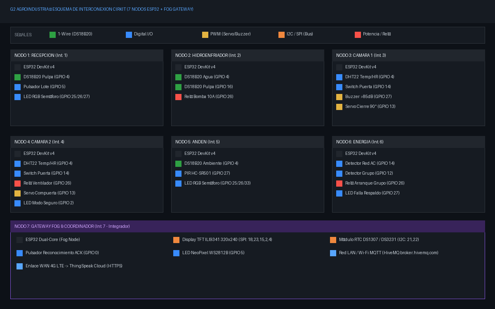

Contexto
Espárrago y palta, temporada de 24 h con exterior > 38 °C. El espárrago debe enfriarse en < 2 h desde la cosecha y mantenerse a 0–2 °C hasta el contenedor.
Hoy la cadena se registra en planillas cada 4 h: no se sabe en qué punto ni cuánto tiempo se rompe.
Cifras
3 lotes · USD 75 000
rechazados por el comprador europeo en la última temporada + riesgo de perder la certificación. (Empresa y cifras ficticias.)
Causas
- Puertas abiertas más de lo necesario en la carga
- Producto esperando en andén sin control
- 3 marcas de cámaras sin registro común
- Apagones sin alerta oportuna
Restricciones
- WAN ≤ S/ 150 al mes
- Prohibido LoRa (aseguradora)
- Detección y actuación sin internet ni red eléctrica
Reto
¿En qué capa (edge o fog) y con qué regla detectar la ruptura, localizarla y actuar antes de que el lote salga de rango, con falsas alarmas que no interrumpan el despacho?
Parte del problema que resuelve cada nodo
| # | Nodo | Resuelve | Actúa |
|---|---|---|---|
| 1 | Recepción | Registro de lote y T° inicial (trazabilidad) | LED RGB semáforo |
| 2 | Hidroenfriador | Enfriar < 2 h | Relé bomba |
| 3 | Cámara 1 | Evita pérdida por puerta abierta | Buzzer + servo |
| 4 | Cámara 2 | Recupera T° tras apertura | Relé ventilador + servo |
| 5 | Andén | Tiempo de espera fuera del frío | LED RGB |
| 6 | Energía | Apagón y respaldo del frío | Relé grupo + LED |
| 7 | Gateway | Sigue el lote, localiza, coordina sin internet | TFT + NeoPixel |
Diagrama de Conexiones Cirkit (Paso 8)
Esquema circuital de interconexión con sensores, actuadores y tipos de señal (1-Wire, Digital, PWM, I2C, SPI).

Recorrido del lote
Esperando datos…
Pantalla TFT del Gateway (ILI9341 - Paso 12)
Nodos (Panel por Integrante)
Secuencia: detecta → decide → actúa → confirma
Actuadores / confirmaciones
Los ataques se envían sin clave (la página no tiene las claves de los nodos). El rechazo lo reportan el nodo atacado y el gateway; abajo debe verse hora, nodo, tipo, acción y motivo, y que el frío y el respaldo siguieron operando.
Registro de eventos de seguridad
| Hora | Nodo | Tipo | Acción | Motivo |
|---|